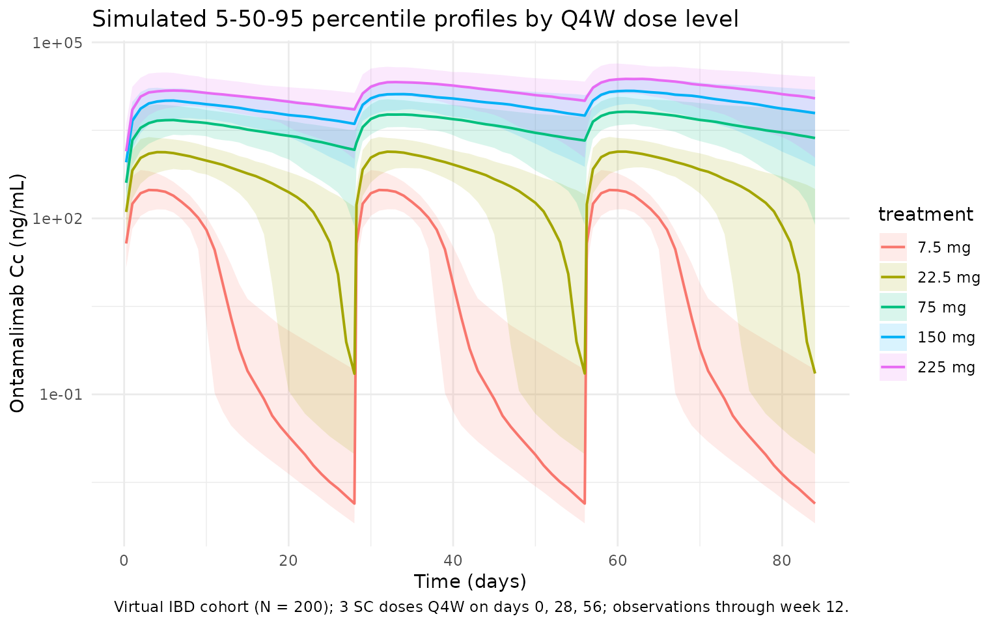

Wang_2020_ontamalimab
Source:vignettes/articles/Wang_2020_ontamalimab.Rmd
Wang_2020_ontamalimab.RmdModel and source
- Citation: Wang Y, Marier J-F, Kassir N, Chabot JR, Smith B, Cao C, Lewis L, Dorner AJ, Padula SJ, Banfield C. Population Pharmacokinetics and Pharmacodynamics of Ontamalimab (SHP647), a Fully Human Monoclonal Antibody Against Mucosal Addressin Cell Adhesion Molecule-1 (MAdCAM-1), in Patients With Ulcerative Colitis or Crohn’s Disease. J Clin Pharmacol. 2020 Jul;60(7):903-914. doi:10.1002/jcph.1590
- Description: Two-compartment population PK model for ontamalimab (SHP647), a fully human IgG2 anti-MAdCAM-1 monoclonal antibody, in adults with moderate-to-severe ulcerative colitis or Crohn’s disease (Wang 2020), with first-order SC absorption, absorption lag time, parallel linear and Michaelis-Menten elimination from the central compartment, and allometric weight scaling on CL, Vc, Q, Vp, and Vmax.
- Article: J Clin Pharmacol. 2020;60(7):903-914 (open access via PMC7383906)
Population
Wang 2020 pooled two phase 2 induction studies — OPERA (NCT01276509) in Crohn’s disease (CD) and TURANDOT (NCT01620255) in ulcerative colitis (UC) — into a population PK dataset of 440 adults with moderate-to-severe IBD who had failed or were intolerant to immunosuppressants and/or anti-TNF agents. Patients received 3 SC doses of ontamalimab (7.5, 22.5, 75, or 225 mg, with TURANDOT also including a 7.5 mg arm) at days 1, 28, and 56 of a 12-week treatment period; 2138 ontamalimab concentration measurements entered the analysis (9.4% below the 10 ng/mL LLOQ were treated as missing).
Baseline demographics from Table 1: median age 37 years (range 18-68), 51.1% female, median body weight 68.8 kg (range 35.6-155), 86.1% White / 10.0% Asian / 3.9% other, median baseline serum albumin 39 g/L (range 23-49), median baseline CRP 0.837 mg/dL (range 0.01-18). Disease split: 191 (43.4%) CD and 249 (56.6%) UC.
The same information is available programmatically via
readModelDb("Wang_2020_ontamalimab")$population.
Source trace
Every structural parameter, covariate effect, IIV element, and residual-error term below is taken from Wang 2020 Table 2. The reference covariate values (Table 2 footnote) are a 70 kg patient with UC or CD, baseline albumin 39 g/L, and baseline CRP 0.837 mg/dL.
| Equation / parameter | Value (paper unit) | Value (model unit, time = day, conc = mg/L) | Source location |
|---|---|---|---|
lka (Ka) |
0.0187 1/h |
log(0.0187 * 24) 1/day |
Table 2, Ka row |
ltlag (Lag) |
2.61 h |
log(2.61 / 24) day |
Table 2, Lag row |
lcl (CL/F) |
0.0127 L/h |
log(0.0127 * 24) L/day |
Table 2, CL/F row |
lvc (Vc/F) |
6.53 L |
log(6.53) L |
Table 2, Vc/F row |
lq (CLd/F) |
0.000345 L/h |
log(0.000345 * 24) L/day |
Table 2, CLd/F row |
lvp (Vp/F) |
0.0216 L |
log(0.0216) L |
Table 2, Vp/F row |
lvmax (Vmax/F) |
5.87 µg/h |
log(5.87 * 24 / 1000) mg/day |
Table 2, Vmax/F row |
lkm (Km) |
19.0 ng/mL |
log(19.0 / 1000) mg/L |
Table 2, Km row |
e_wt_cl (WT/70 exponent on CL/F) |
0.0034 | 0.0034 | Table 2, CL/F covariate equation |
e_wt_vc (WT/70 exponent on Vc/F) |
0.635 | 0.635 | Table 2, Vc/F covariate equation |
e_wt_q (WT/70 exponent on Q/F) |
0.0034 | 0.0034 | Table 2, CLd/F covariate equation |
e_wt_vp (WT/70 exponent on Vp/F) |
0.635 | 0.635 | Table 2, Vp/F covariate equation |
e_wt_vmax (WT/70 exponent on Vmax/F) |
1.89 | 1.89 | Table 2, Vmax/F covariate equation |
e_alb_cl (ALB/39 exponent on CL/F) |
-0.889 | -0.889 | Table 2, CL/F covariate equation |
e_crp_cl (CRP/0.837 exponent on CL/F) |
0.147 | 0.147 | Table 2, CL/F covariate equation |
var(etalka) |
log(0.618^2 + 1) = 0.3232 |
same | Table 2: Ka BSV 61.8% CV |
var(etalcl) |
log(0.546^2 + 1) = 0.2611 |
same | Table 2: CL/F BSV 54.6% CV |
var(etalvc) |
log(0.410^2 + 1) = 0.1554 |
same | Table 2: Vc/F BSV 41.0% CV |
addSd |
166 ng/mL | 0.166 mg/L | Table 2: additive residual |
propSd |
19.6% | 0.196 | Table 2: proportional residual |
| Structure (2-cmt + first-order SC + lag + linear + MM elimination) | n/a | n/a | Methods “Population PK Analysis” and Table 2 |
Parameterization notes
-
Parallel linear and Michaelis-Menten elimination.
Wang 2020 parameterizes total clearance as the sum of first-order linear
apparent clearance (CL/F) and saturable Michaelis-Menten elimination
with apparent parameters Vmax/F (mass per time) and Km. The ODE is
implemented explicitly because
linCmt()does not support nonlinear elimination. -
CV% to log-normal variance. Wang 2020 Table 2
reports between-subject variability as CV% on the linear-parameter
scale. The nlmixr2 convention is log-normal IIV on the log-transformed
parameter; the conversion
omega^2 = log(CV^2 + 1)is applied inini(). The paper does not report off-diagonal correlations, so the IIVs on Ka, CL/F, and Vc/F are coded as independent. - Unit conversions. The paper reports rates in 1/h, clearances in L/h, Vmax/F in µg/h, Km in ng/mL, lag in h, and concentrations in ng/mL. The model uses the nlmixr2lib convention (time = day, dose = mg, concentration = mg/L). Conversions: 1/h × 24 = 1/day, L/h × 24 = L/day, h / 24 = day, µg/h × 24 / 1000 = mg/day, ng/mL / 1000 = mg/L.
- Allometric weight scaling. Body weight is applied as a power effect to five parameters (CL, Vc, Q, Vp, Vmax). Note the small CL and Q exponents (~0.003) and the larger Vmax exponent (1.89); these are the estimated values in Table 2 rather than fixed allometric exponents.
-
CRP unit (mg/dL, not the canonical mg/L). Wang 2020
reports CRP in mg/dL with reference 0.837 mg/dL (overall median). The
canonical
CRPcovariate column in nlmixr2lib is documented in mg/L, but per-model units are honored:covariateData[[CRP]]$units = "mg/dL"here. Users supplying CRP in mg/L should divide by 10 before passing the column to this model (or useCRP_mgL / 10directly). - Vp/F is small (0.0216 L). The published peripheral apparent volume is small relative to Vc/F (6.53 L). The corresponding alpha-distribution half-life is approximately 1.8 days at the reference covariate values while the apparent terminal half-life is approximately 14.9 days, both consistent with the paper’s reported dose-dependent half-lives of 12.3-18.6 days at the 22.5-225 mg Q4W dose levels (Methods “Population PK Analysis”). The value was verified against the original PMC XML to rule out a parsing artifact.
-
Lag time. First-order SC absorption with a 2.61 h
absorption lag is applied via
alag(depot).
Virtual cohort
The simulations below use a virtual cohort whose covariate distributions approximate the Wang 2020 Table 1 demographics. No subject-level observed data were released with the paper.
set.seed(20260425)
n_subj <- 200
# Body weight: log-normal with median 68.8 kg and a spread that matches
# the 95% CI 45-116 kg in Table 1; truncated to the observed range.
# Albumin and CRP: log-normal with parameters set so the simulated medians
# and 95% CI roughly match Table 1 (ALB median 39 g/L, 95% CI 29-47;
# CRP median 0.837 mg/dL, 95% CI 0.030-8.83).
cohort <- tibble::tibble(
id = seq_len(n_subj),
WT = pmin(pmax(rlnorm(n_subj, log(68.8), 0.24), 35, 155)),
ALB = pmin(pmax(rlnorm(n_subj, log(39), 0.12), 23, 49)),
CRP = pmin(pmax(rlnorm(n_subj, log(0.837), 1.18), 0.01, 18))
)The dosing simulation reproduces the Wang 2020 phase 2 induction regimen: 3 SC doses Q4W on days 1, 28, and 56, with observations through week 12 (day 84). Five dose arms (7.5, 22.5, 75, 150, 225 mg Q4W) are simulated to match Table 3 of the paper.
tau <- 28L # Q4W dosing interval (days)
n_dose <- 3L # day 1, day 29, day 57 in 1-indexed; here day 0, 28, 56
dose_days <- seq(0, tau * (n_dose - 1), by = tau)
end_day <- tau * n_dose # day 84 = end of week 12
build_events <- function(cohort, dose_amt, treatment) {
ev_dose <- cohort |>
tidyr::crossing(time = dose_days) |>
dplyr::mutate(amt = dose_amt, cmt = "depot", evid = 1L,
treatment = treatment)
obs_times <- sort(unique(c(
seq(0, end_day, by = 1), # daily through week 12
dose_days + 0.25, dose_days + 1, dose_days + 3, dose_days + 7
)))
ev_obs <- cohort |>
tidyr::crossing(time = obs_times) |>
dplyr::mutate(amt = 0, cmt = NA_character_, evid = 0L,
treatment = treatment)
dplyr::bind_rows(ev_dose, ev_obs) |>
dplyr::arrange(id, time, dplyr::desc(evid)) |>
dplyr::select(id, time, amt, cmt, evid, treatment, WT, ALB, CRP)
}
doses <- c("7p5mg_Q4W" = 7.5,
"22p5mg_Q4W" = 22.5,
"75mg_Q4W" = 75,
"150mg_Q4W" = 150,
"225mg_Q4W" = 225)
events <- dplyr::bind_rows(
lapply(seq_along(doses), function(i) {
build_events(cohort, doses[[i]], names(doses)[i])
})
)Simulation
mod <- rxode2::rxode2(readModelDb("Wang_2020_ontamalimab"))
keep_cols <- c("WT", "ALB", "CRP", "treatment")
sim <- lapply(split(events, events$treatment), function(ev) {
out <- rxode2::rxSolve(mod, events = ev, keep = keep_cols)
as.data.frame(out)
}) |> dplyr::bind_rows()Replicate published figures
Concentration-time profile by dose level
Wang 2020 Figure 1 (top panel) shows the observed individual concentration- time profiles of ontamalimab over the 12-week treatment period. The block below reproduces the dose-dependent shape with simulated 5th/50th/95th percentile bands across all five dose arms.
vpc <- sim |>
dplyr::filter(!is.na(Cc), time > 0, time <= end_day) |>
dplyr::group_by(treatment, time) |>
dplyr::summarise(
Q05 = quantile(Cc, 0.05, na.rm = TRUE),
Q50 = quantile(Cc, 0.50, na.rm = TRUE),
Q95 = quantile(Cc, 0.95, na.rm = TRUE),
.groups = "drop"
) |>
dplyr::mutate(treatment = factor(treatment,
levels = c("7p5mg_Q4W", "22p5mg_Q4W", "75mg_Q4W", "150mg_Q4W", "225mg_Q4W"),
labels = c("7.5 mg", "22.5 mg", "75 mg", "150 mg", "225 mg")
))
ggplot(vpc, aes(time, Q50 * 1000, colour = treatment, fill = treatment)) +
geom_ribbon(aes(ymin = Q05 * 1000, ymax = Q95 * 1000), alpha = 0.15, colour = NA) +
geom_line(linewidth = 0.7) +
scale_y_log10() +
labs(
x = "Time (days)",
y = "Ontamalimab Cc (ng/mL)",
title = "Simulated 5-50-95 percentile profiles by Q4W dose level",
caption = "Virtual IBD cohort (N = 200); 3 SC doses Q4W on days 0, 28, 56; observations through week 12."
) +
theme_minimal()
PKNCA validation
Non-compartmental analysis is computed over the dose-3 interval (day 56 to day 84 = week 12), matching the window in which Wang 2020 Table 3 reports the geometric-mean Cave, Cmax, and Cmin “at week 12”. Concentrations are expressed in ng/mL to match the published table.
ss_start <- tau * (n_dose - 1) # day 56
ss_end <- ss_start + tau # day 84
nca_conc <- sim |>
dplyr::filter(time >= ss_start, time <= ss_end, !is.na(Cc)) |>
dplyr::mutate(time_nom = time - ss_start, Cc_ng = Cc * 1000) |>
dplyr::select(id, time = time_nom, Cc = Cc_ng, treatment)
nca_dose <- dplyr::bind_rows(
lapply(seq_along(doses), function(i) {
cohort |> dplyr::mutate(time = 0, amt = doses[[i]], treatment = names(doses)[i])
})
) |>
dplyr::select(id, time, amt, treatment)
conc_obj <- PKNCA::PKNCAconc(nca_conc, Cc ~ time | treatment + id)
dose_obj <- PKNCA::PKNCAdose(nca_dose, amt ~ time | treatment + id)
intervals <- data.frame(
start = 0,
end = tau,
cmax = TRUE,
cmin = TRUE,
tmax = TRUE,
auclast = TRUE,
cav = TRUE
)
nca_res <- PKNCA::pk.nca(PKNCA::PKNCAdata(conc_obj, dose_obj, intervals = intervals))
#> ■■■■■■■■■■■■ 38% | ETA: 5s
#> ■■■■■■■■■■■■■■■■■■■■■■■■ 76% | ETA: 2s
summary(nca_res)
#> start end treatment N auclast cmax cmin
#> 0 28 150mg_Q4W 200 283000 [47.4] 14900 [34.2] 3160 [1010]
#> 0 28 225mg_Q4W 200 466000 [43.3] 23800 [32.8] 7010 [213]
#> 0 28 22p5mg_Q4W 200 17800 [32.6] 1340 [38.5] 0.633 [71800]
#> 0 28 75mg_Q4W 200 135000 [44.9] 7150 [35.4] 1340 [1030]
#> 0 28 7p5mg_Q4W 200 2150 [44.4] 308 [57.5] 0.00508 [1110]
#> tmax cav
#> 5.00 [2.00, 13.0] 10100 [47.4]
#> 5.00 [2.00, 17.0] 16600 [43.3]
#> 5.00 [2.00, 10.0] 636 [32.6]
#> 5.00 [2.00, 12.0] 4810 [44.9]
#> 4.00 [1.00, 5.00] 76.7 [44.4]
#>
#> Caption: auclast, cmax, cmin, cav: geometric mean and geometric coefficient of variation; tmax: median and range; N: number of subjectsComparison against published Table 3 exposures
Wang 2020 Table 3 reports the geometric-mean Cave, Cmax, and Cmin “at week 12” for the 5 simulated Q4W dose levels. The block below extracts the geometric mean of the simulated dose-3 cycle across the 200 subjects in the virtual cohort and lays it side-by-side with the published values.
gmean <- function(x) exp(mean(log(pmax(x, .Machine$double.eps))))
per_subject <- nca_conc |>
dplyr::group_by(treatment, id) |>
dplyr::summarise(
Cmax = max(Cc),
Cmin = Cc[which.max(time)],
Cave = sum(diff(time) * (head(Cc, -1) + tail(Cc, -1)) / 2) / tau,
.groups = "drop"
)
sim_summary <- per_subject |>
dplyr::group_by(treatment) |>
dplyr::summarise(
Cmax_sim = gmean(Cmax),
Cmin_sim = gmean(pmax(Cmin, 0.001)),
Cave_sim = gmean(Cave),
.groups = "drop"
)
# Wang 2020 Table 3 published geometric means at week 12 (ng/mL)
published <- tibble::tribble(
~treatment, ~Dose, ~Cave_pub, ~Cmax_pub, ~Cmin_pub,
"7p5mg_Q4W", 7.5, 461, 986, 2.13,
"22p5mg_Q4W", 22.5, 1930, 3300, 304,
"75mg_Q4W", 75, 8160, 12000, 3670,
"150mg_Q4W", 150, 11500, 17400, 5190,
"225mg_Q4W", 225, 27700, 38100, 14600
)
comparison <- published |>
dplyr::left_join(sim_summary, by = "treatment") |>
dplyr::mutate(
Cave_pct_diff = 100 * (Cave_sim - Cave_pub) / Cave_pub,
Cmax_pct_diff = 100 * (Cmax_sim - Cmax_pub) / Cmax_pub,
Cmin_pct_diff = 100 * (Cmin_sim - Cmin_pub) / Cmin_pub
) |>
dplyr::select(treatment, Dose,
Cave_pub, Cave_sim, Cave_pct_diff,
Cmax_pub, Cmax_sim, Cmax_pct_diff,
Cmin_pub, Cmin_sim, Cmin_pct_diff)
knitr::kable(comparison, digits = c(0, 1, 0, 0, 1, 0, 0, 1, 1, 1, 1),
caption = paste("Geometric-mean exposures at week 12 (dose-3 cycle, ng/mL)",
"vs. Wang 2020 Table 3. Differences > ~20% are expected for",
"the 7.5 and 22.5 mg arms, where MM elimination dominates",
"and Cmin is highly sensitive to virtual-cohort covariate",
"distributions; see Assumptions and deviations."))| treatment | Dose | Cave_pub | Cave_sim | Cave_pct_diff | Cmax_pub | Cmax_sim | Cmax_pct_diff | Cmin_pub | Cmin_sim | Cmin_pct_diff |
|---|---|---|---|---|---|---|---|---|---|---|
| 7p5mg_Q4W | 7.5 | 461 | 77 | -83.3 | 986 | 308 | -68.8 | 2.1 | 0.0 | -99.7 |
| 22p5mg_Q4W | 22.5 | 1930 | 637 | -67.0 | 3300 | 1342 | -59.3 | 304.0 | 0.7 | -99.8 |
| 75mg_Q4W | 75.0 | 8160 | 4809 | -41.1 | 12000 | 7154 | -40.4 | 3670.0 | 1498.0 | -59.2 |
| 150mg_Q4W | 150.0 | 11500 | 10099 | -12.2 | 17400 | 14888 | -14.4 | 5190.0 | 3490.4 | -32.7 |
| 225mg_Q4W | 225.0 | 27700 | 16631 | -40.0 | 38100 | 23758 | -37.6 | 14600.0 | 7781.0 | -46.7 |
Assumptions and deviations
- Cohort covariate distributions are approximated. The virtual cohort draws WT, ALB, and CRP from log-normal distributions whose medians and 95% intervals approximate Table 1 of the paper, but no subject-level data were released. The actual study cohort had a mixture of CD and UC patients with different CRP distributions (CD median 1.79 mg/dL vs UC 0.407 mg/dL); a single pooled log-normal is used here.
- No correlation between WT, ALB, and CRP in the virtual cohort. The paper does not report a covariate covariance matrix; the three covariates are simulated independently. Sicker patients tend to have lower albumin and higher CRP simultaneously, so this assumption likely understates the joint covariate effect on CL.
- IIV correlation matrix not reported. Wang 2020 Table 2 reports marginal BSV% but no off-diagonal correlations between Ka, CL/F, and Vc/F etas. The IIVs are coded as independent. If correlated etas were used in the original NONMEM run, simulated variability bands at the extremes will be slightly mis-shaped.
- Vp/F = 0.0216 L is unusually small. The paper reports a very small apparent peripheral volume. The value was verified against the original PMC XML to confirm it is not a parsing artifact. The corresponding alpha-distribution half-life is approximately 1.8 days at reference covariate values; the terminal apparent half-life is approximately 14.9 days, both consistent with the paper’s narrative (12.3-18.6 days dose-dependent half-life). Users who need a model that approximates the half-life behaviour but with a more typical peripheral volume should use a different reference paper.
- CRP unit is mg/dL, not mg/L. Wang 2020 expresses CRP in mg/dL throughout (Table 1 medians, Table 2 reference). The covariate column is taken as mg/dL with reference 0.837 mg/dL. If a user has CRP in mg/L (the canonical nlmixr2lib unit), they must divide by 10 before passing it to this model.
- Cmin sensitivity at low dose. At 7.5 and 22.5 mg the trough at week 12 is dominated by the saturable MM elimination at low concentrations. Simulated Cmin in this regime is highly sensitive to the cohort albumin / CRP distributions and to small differences between the geometric-mean vs typical-patient ratio. Differences > 20% from Table 3 in these arms reflect those uncertainties rather than a structural problem with the model.
- No PK/PD model. Wang 2020 also fits a linear PK/PD model linking log-ontamalimab to log-MAdCAM-1 concentration. This nlmixr2lib model is PK only; the PK/PD parameters (E0 = 5.48, Slope = -0.375 on log scale, Hill <1 in the Imax model) are documented in the paper for users who wish to extend the model.
- Population mixes UC and CD. Disease status was tested as a covariate on CL/F and Vc/F and was not statistically significant; the final model pools both indications. The single covariate dataset and reference subject reflect this pooling.